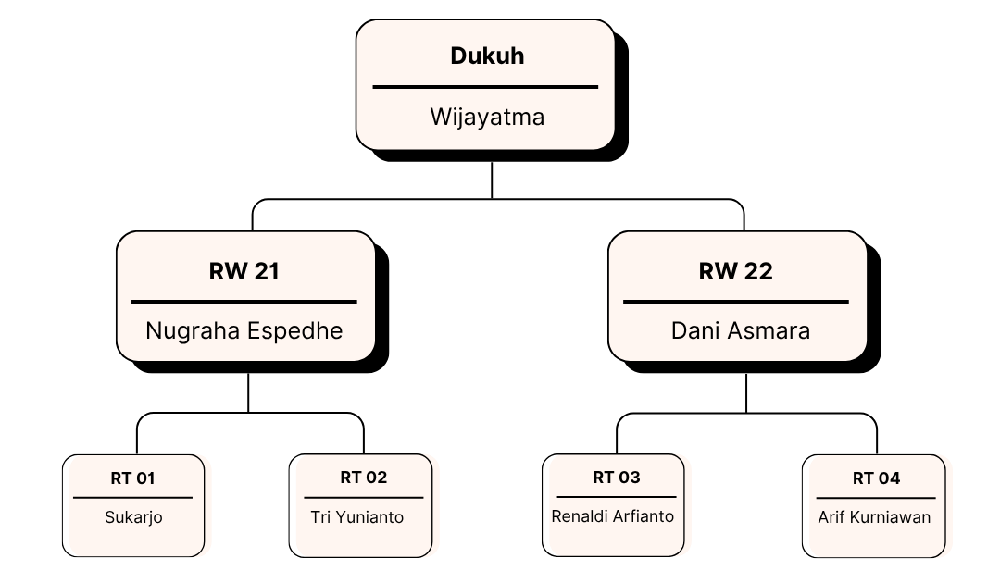
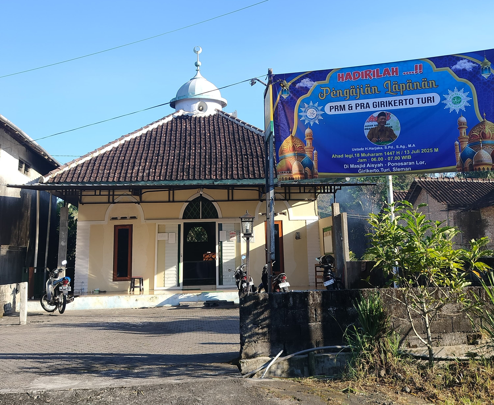
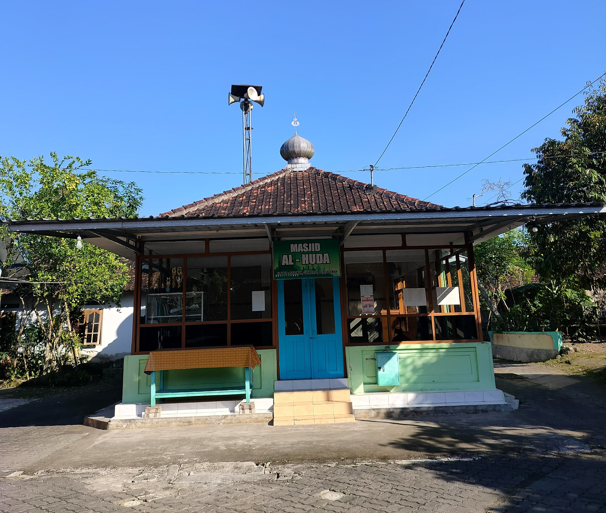
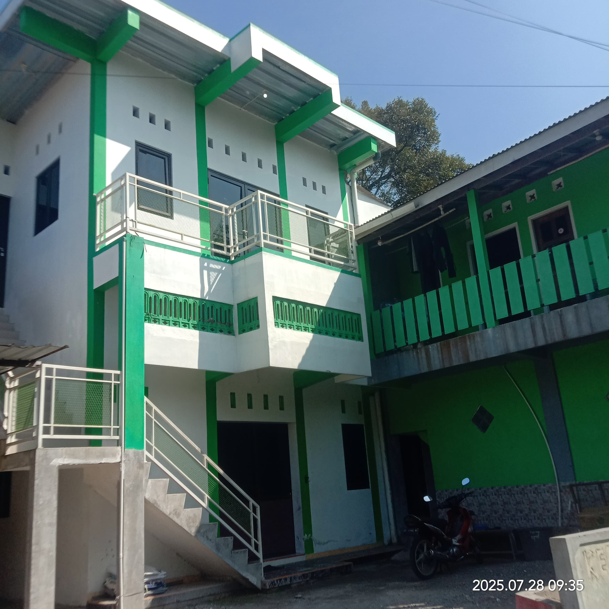
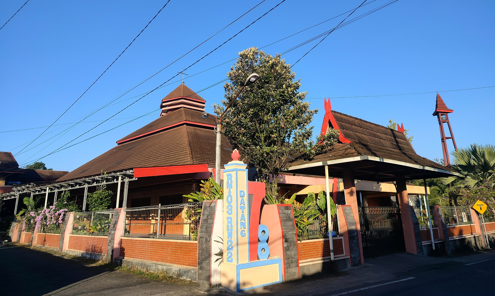
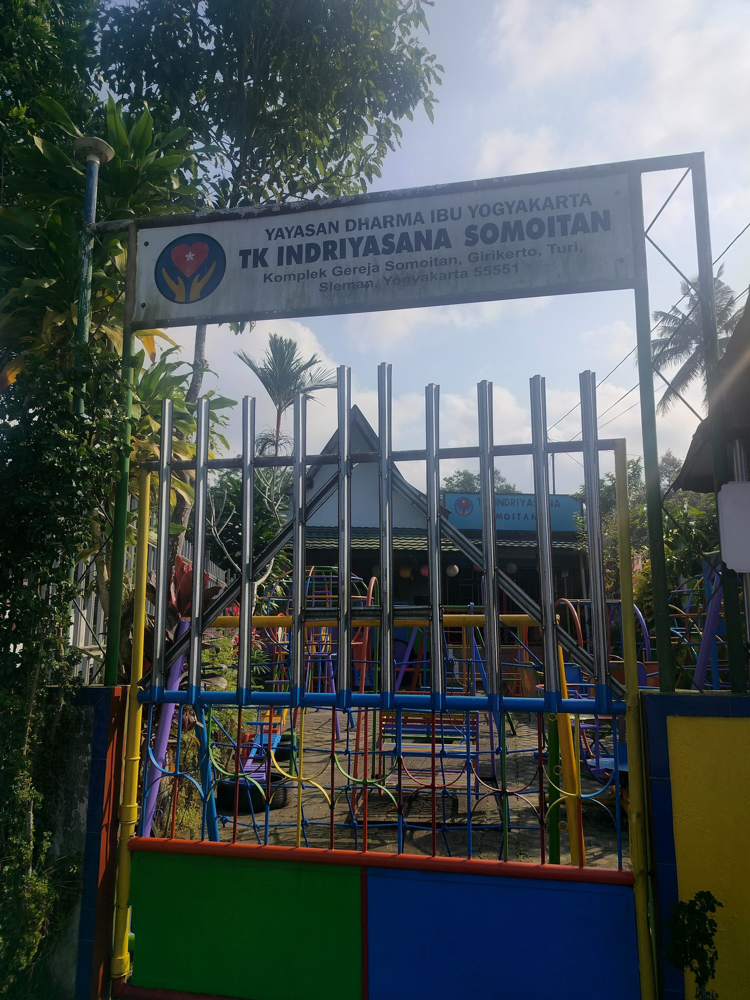
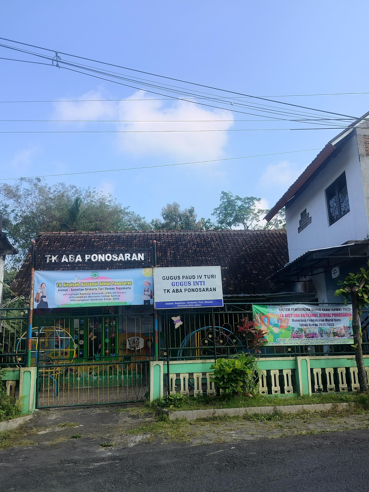
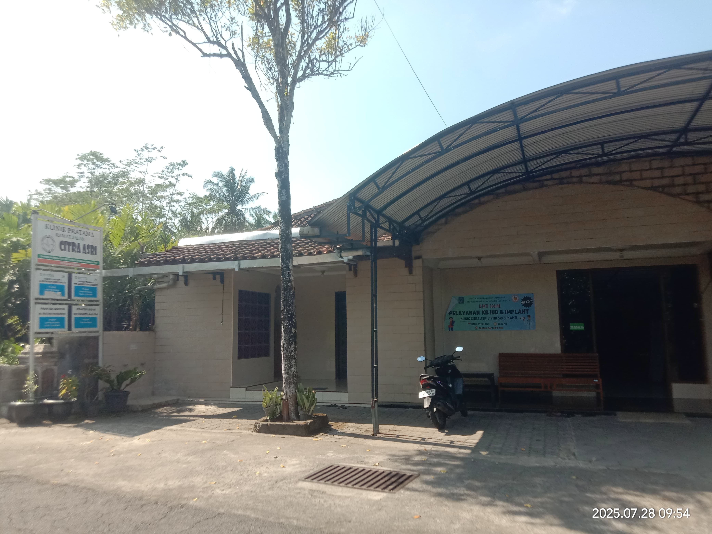
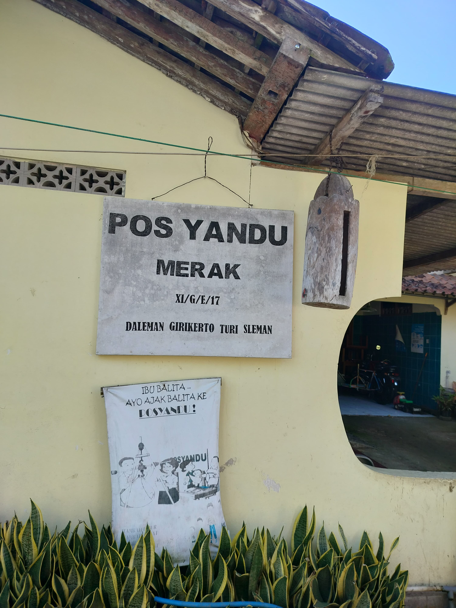

Sejarah Dukuh Daleman
Awal Mula Pemukiman
Wilayah Daleman dulunya berupa hutan dan jarang rumah. Buyut-buyut pertama kali membuka lahan dan membangun rumah di area ini dibantu oleh orang tua zaman dahulu.
Asal-Usul Nama & Jalur Akses
Jalan utama dulu berada di sisi timur dekat sungai, lalu dipindahkan ke sisi barat dekat gereja karena kondisi becek. Nama “Daleman” berkembang seiring dengan menetapnya masyarakat.
Perpindahan & Transmigrasi (1961)
Akibat letusan Merapi, beberapa warga Dusun atas harus mengungsi dan akhirnya transmigrasi ke Sumatera. Proses ini terjadi setelah 100 hari pengungsian.
Perubahan Ekonomi
Dulu masyarakat bercocok tanam padi, palawija, dan tembakau. Sejak 1980-an, tanaman salak mulai mendominasi sebagai sumber mata pencaharian utama.
Pemimpin Dukuh
Tokoh Dukuh antara lain Mbah Siwiharjo (1945–1980an), Pak Yono Sumarno (1980an–2000), dan Pak Wijayatma (2000–2025). Pemilihan RT dilakukan langsung oleh warga.
Peristiwa Besar
Letusan besar Merapi terjadi pada 1954 dan 1961. Pada peristiwa Selasa Kliwon, 14 orang dari Turgo menjadi korban dan dimakamkan massal.
Perubahan Sosial & Budaya
Terdapat perubahan dalam cara berinteraksi masyarakat dari masa ke masa, termasuk upacara rutin 17 Agustus di Monumen Simon Slamet dan peningkatan sarana ibadah seperti masjid dan gereja.
Struktur Bagan Dukuh Daleman
Potensi Dukuh Daleman
Tanaman
Dukuh Daleman memiliki berbagai potensi jenis tanaman seperti salak, talas, dan ketela pohon. Wilayah yang subur membuat pertanian menjadi mata pencaharian utama.
Hewan
Masyarakat juga memelihara ayam, kambing, dan bebek sebagai kegiatan peternakan yang membantu ekonomi keluarga. Masyarakat juga melakukan budidaya perikanan seperti ikan nila, lele, dan yang lainnya.
Sungai
Sungai yang mengalir di sekitar Dukuh Daleman dimanfaatkan untuk irigasi sawah dan kebutuhan air sehari-hari.
🌿 Kawi Dasri - Desa Wisata Daleman
Kawi Dasri adalah kawasan wisata lokal yang terletak di jantung Dukuh Daleman. Nama "Kawi Dasri" merupakan singkatan dari KAmpung WIsata DAleman asRI.
Tempat ini mulai dikembangkan menjadi destinasi edukatif dan rekreatif berbasis potensi lokal. Pengunjung dapat menikmati wisata alam, belajar bertani, mengenal budaya lokal, dan mengikuti berbagai kegiatan masyarakat. Sangat cocok untuk liburan keluarga, komunitas, maupun edukasi anak-anak sekolah.


Ikuti Kawi Dasri di Media Sosial:


Potensi Budaya
Monumen Simon Slamet
Monumen Simon Slamet adalah tugu peringatan yang didirikan di Dusun Daleman, Girikerto, Turi, Sleman, untuk mengenang gugurnya Simon Slamet, anggota laskar rakyat yang tewas dalam pertempuran melawan Belanda pada 26 April 1949. Monumen ini berdiri di atas lahan seluas 400 m² dan dilengkapi dengan makam serta cungkup, simbol perjuangan rakyat. Pendirian monumen ini merupakan bentuk penghargaan dari warga atas jasa beliau dalam mempertahankan kemerdekaan.
Monumen Simon Slamet adalah tugu peringatan yang didirikan di Dusun Daleman, Girikerto, Turi, Sleman, untuk mengenang gugurnya Simon Slamet, anggota laskar rakyat yang tewas dalam pertempuran melawan Belanda pada 26 April 1949. Monumen ini berdiri di atas lahan seluas 400 m² dan dilengkapi dengan makam serta cungkup, simbol perjuangan rakyat. Pendirian monumen ini merupakan bentuk penghargaan dari warga atas jasa beliau dalam mempertahankan kemerdekaan.
Sarana & Prasarana

Lihat Lokasi
Masjid Aisyah
Tempat ibadah umat Muslim di Dukuh Daleman.

Lihat Lokasi
Masjid Al-Huda
Tempat ibadah umat Muslim di Dukuh Daleman.

Lihat Lokasi
Masjid Baitul Ma'ruf (LDII)
Tempat ibadah umat Muslim LDII di Dukuh Daleman.

Lihat Lokasi
Gereja Katolik Santo Yohanes Rasul
Tempat ibadah umat Katolik di Dukuh Daleman.

Lihat Lokasi
TK Indriyasana Somoitan
Fasilitas pendidikan untuk anak usia dini.

Lihat Lokasi
TK Aba Ponosaran
Fasilitas pendidikan untuk anak usia dini.

Sekolah Dasar Somoitan
Fasilitas pendidikan dasar di Dukuh Daleman.

Lihat Lokasi
Klinik Citra Asri
Fasilitas kesehatan untuk masyarakat.

Lihat Lokasi
Posyandu
Layanan kesehatan ibu dan anak.
Pemetaan Dukuh Daleman
Informasi Administratif
Batas Wilayah:
• Sebelah Utara: Soprayan
• Sebelah Timur: Nangsri Kidul
• Sebelah Barat: Kembang
• Sebelah Selatan: Ponosaran Kidul
Luas Wilayah:
± 56 hektar

Peta Rawan Bencana Dukuh Daleman

Peta Rawan Bencana Dukuh Daleman, Kalurahan Girikerto, Kapanewon Turi ini disusun oleh tim KKN AB.83.100 dan menyajikan informasi spasial berbasis citra Landsat yang merepresentasikan potensi aliran lava dari Gunung Merapi. Warna biru pada peta menunjukkan area lahan terbuka yang rentan dilalui aliran lava, sedangkan warna coklat mewakili lahan tertutup seperti vegetasi lebat atau permukiman padat. Garis merah menunjukkan jaringan sungai atau pola pengaliran yang berperan sebagai jalur utama aliran material vulkanik, sementara garis hitam menandai batas administratif Kalurahan Girikerto. Titik merah menunjukkan lokasi Desa Daleman, sedangkan titik biru menandai posko evakuasi BPBD. Peta ini menjadi alat penting dalam upaya kesiapsiagaan dan pengurangan risiko bencana erupsi Gunung Merapi di wilayah tersebut.